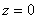
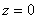
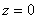
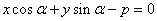
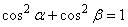
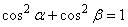
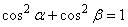

Нормальное уравнение прямой

Пусть известно расстояние от прямой до начала координат и угол  между
перпендикуляром к прямой и осью
между
перпендикуляром к прямой и осью  . Из нормального
уравнения плоскости в пространстве, полагая  и
учитывая, что
. Из нормального
уравнения плоскости в пространстве, полагая  и
учитывая, что
между
перпендикуляром к прямой и осью . Из нормального
уравнения плоскости в пространстве, полагая  и
учитывая, что,
получаем нормальное уравнение прямой на плоскости в виде:

Нормальное
уравнение прямой
.
Нормальное уравнение прямой можно получить из общего
уравнения прямой  , умножив его на
нормирующий множитель . Знак числа m должен быть противоположен
знаку числа
, умножив его на
нормирующий множитель . Знак числа m должен быть противоположен
знаку числа  .
.
, умножив его на
нормирующий множитель . Знак числа m должен быть противоположен
знаку числа .Косинусы углов, образуемых прямой с осями координат,
называются направляющими косинусами прямой.
Если угол между прямой и осью равен
и угол между прямой и осью  равен
равен  ,
то .
,
то .
равен
и угол между прямой и осью равен ,
то .